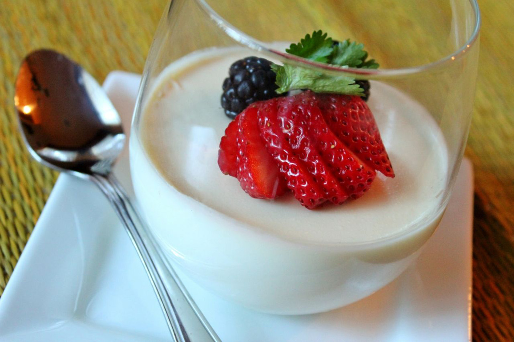

Panna cotta

A classic,easy to make italian dessert which will last for several days in the refridgerator
- 1/3 cup skim milk
- 1 (.25 ounce) envelope unflavored gelatin
- 2 and a half cups heavy cream
- an half cup white sugar
- 1 and a half teaspoons vanilla extract
Recipe
- Pour milk into a small bowl, and stir in the gelatin powder. Set aside.
- In a saucepan, stir together the heavy cream and sugar, and set over medium heat.
Bring to a full boil, watching carefully, as the cream will quickly rise to the top of the pan.
Pour the gelatin and milk into the cream, stirring until completely dissolved.
Cook for one minute, stirring constantly.
Remove from heat, stir in the vanilla and pour into six individual ramekin dishes.
- Cool the ramekins uncovered at room temperature. When cool, cover with plastic wrap,
and refrigerate for at least 4 hours,but preferably overnight before serving.